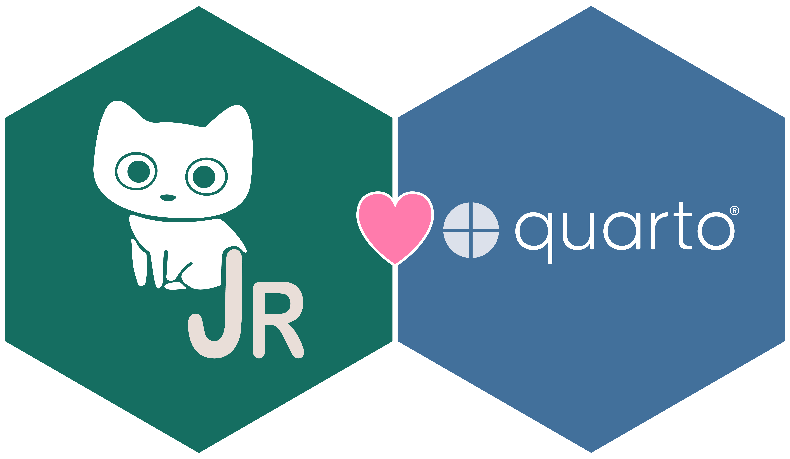
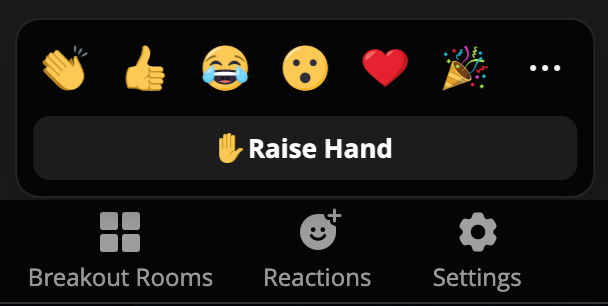
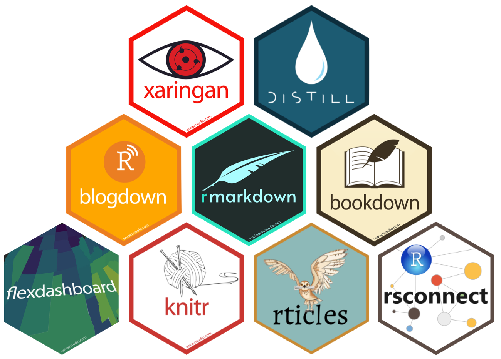
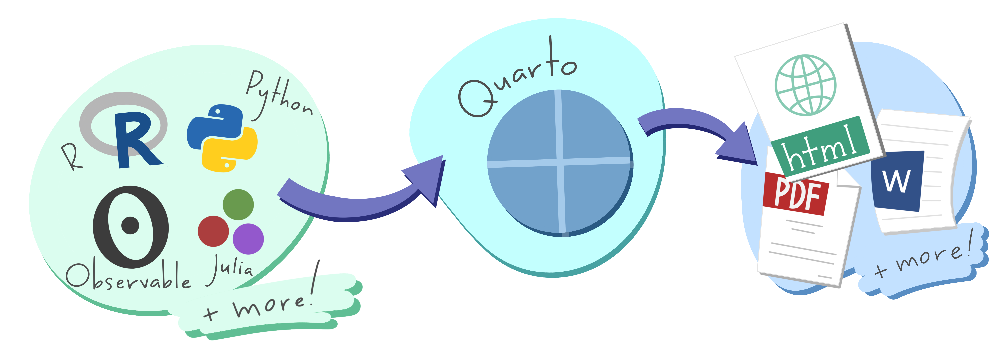
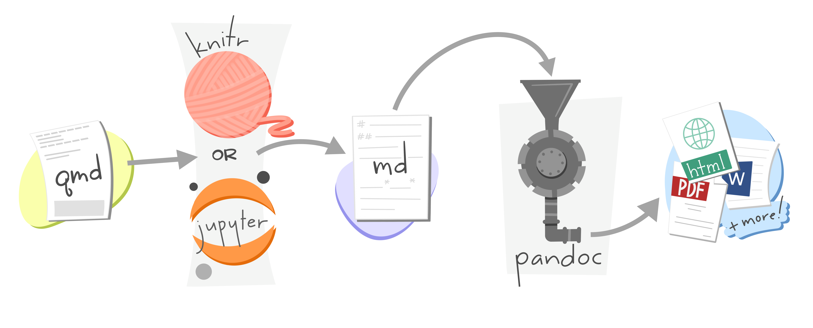
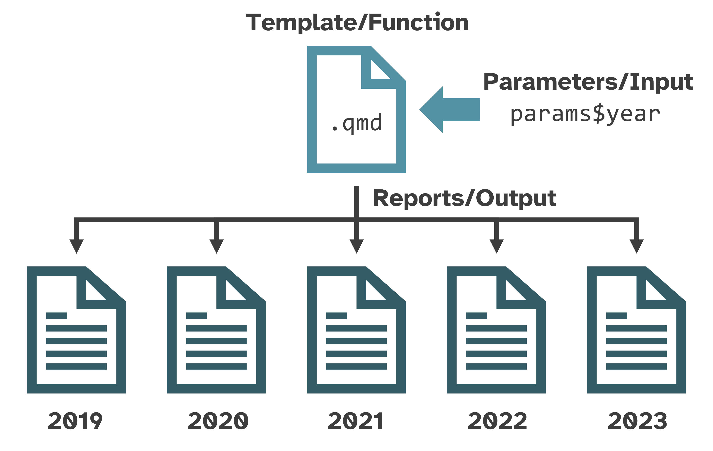
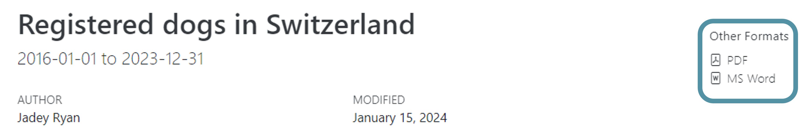
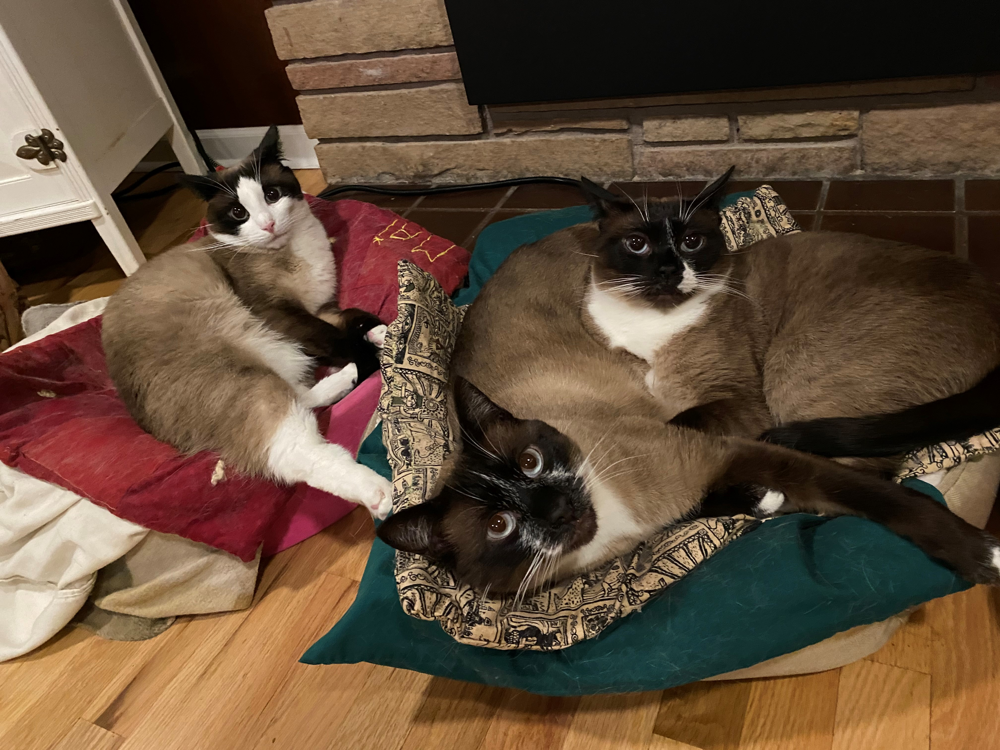

Parameterized Reporting
with Quarto

R-Ladies Washington DC
Acknowledgements
R/Medicine Data Cleaning 2023 Workshop taught by Crystal Lewis, Shannon Pileggi, and Peter Higgins
ASA Traveling Courses on Quarto taught by Mine Çetinkaya-Rundel and Andrew Bray
License
Opinions expressed are solely my own and do not express the views of my employer or any organizations I am associated with.
This work is licensed under Creative Commons Attribution-NonCommercial-ShareAlike 4.0 International (CC BY-NC-SA).
Jadey Ryan
Data scientist at WA Dept of Agriculture
Business owner of The Coding Cats


Photo credit: @leslie.mmichel
Logistics
Login to Posit Cloud: bit.ly/rladies-parameterized-quarto.
If Posit Cloud doesn’t work, download materials locally:
Ask questions in the public Zoom chat or raise hand ✋.

Workshop structure: presentation, exercises, questions to answer in chat [💬 Chat:], and demos.
💪🏼 Exercise 0
Raise/lower your hand on Zoom.
Use your favorite reaction.
💬 Chat: share your name, where you’re calling in from, and one thing you’ve made that you’re proud of.
01:00
Learning objectives
Understand what parameterized reporting is and when it is useful.
Learn how to convert a report into a parameterized template.
Render all variations of the report at once using {quarto} and {purrr}.
Generate multiple format outputs from the same template file with conditional content and conditional code execution.
Syntax and RStudio aside
Pipes
2014+ magrittr pipe
%>%2021+ (R \(\geq\) 4.1.0) native R pipe
|>
Isabella Velásquez’s blog post Understanding the native R pipe |> (2022)
To change Ctrl + Shift + M shortcut to the native pipe:
Tools → Global Options → Code → Editing → Use Native Pipe Operator
Slide adapted from R/Medicine Data Cleaning 2023 Workshop
Namespacing
package::function()
dplyr::select()
tells R explicitly to use the function
selectfrom the packagedplyrhelps avoid name conflicts (e.g.,
MASS::select())does not require
library(dplyr)
Slide adapted from R/Medicine Data Cleaning 2023 Workshop
RStudio options
Tools → Global Options →
Fussy YAML indentation:
Code→Display→Indentation guides:→Rainbow lines
Match parentheses:
Code→Display→Indentation guides:→ CheckUse rainbow parentheses
Matching divs:
R Markdown→Advanced→ CheckUse rainbow fenced divs
R Markdown → Quarto
💬 Chat: what’s your comfort level / experience with R Markdown and Quarto?
R Markdown
Figure from “Hello, Quarto” keynote by Julia Lowndes and Mine Çetinkaya-Rundel, presented at RStudio::Conf(2022).
Quarto


R Markdown vs Quarto

R Markdown
Vast R Markdown ecosystem
Dependent on R

Quarto
Command line interface (CLI)
Expands R Markdown ecosystem
“Batteries included”
Multi-language and multi-engine
R Markdown will still be maintained but likely no new features (Xie 2022).
Differences with parameters
No Quarto equivalent to .Rmd Knit with Parameters GUI built with Shiny {miniUI}.

Figure from R Markdown: The Definitive Guide (Xie et al. 2023)
Workaround: build webapp to get input, serialize to YAML, pass to Quarto render.
More info: GitHub discussion
Convert .Rmd → .qmd*
- Change file extension from
.Rmd→.qmd - Change YAML header (
output:→format:) - Convert chunk headers with
knitr::convert_chunk_header()
*If you want.
Resources for R Markdown users
From R Markdown to Quarto workshop taught by Dr. Mine Çetinkaya-Rundel and Dr. Andrew Bray.
Quarto FAQ for R Markdown Users
Ted Laderas’ talk Quarto/RMarkdown - What’s Different?
Parameterized reports
Many use cases

{kind=link}
{kind=link}
{kind=link}
Different audiences, different reports
Show code for technical staff and hide code for everyone else.
See this StackOverflow question and answer for an example.
💬 Chat: what kinds of reports would you like to parameterize? What would the parameters be?
Like a custom function



What makes a report “parameterized”?
YAML header with
paramskey-value pairs- Yet Another Markdown Language or YAML Ain’t Markup Language 🤷🏻♀️
Use those
paramsin your report to create different variations
Important
Valid parameter values are strings, numbers, or Boolean.
Must serialize a dataframe to pass it as a parameter, then un-serialize it back to a dataframe within the .qmd content.
See Christophe Dervieux’s answer in Posit Community to understand why.
See John Paul Helveston’s blog post to learn how to use {jsonlite} as a workaround.
Workflow
Write report template with default values hard-coded, and then render & review.
Set default
paramskey-value pairs in YAML. Replace hard-coded values with theparamsvariables.Render the single report and review.
Render extreme cases and review.
- Parameter values with barely any data and with tons of data.
Render all variations of the report at once.
💪🏼 Exercise 1
Open
ex-1-swiss-cats.qmd.Click the
 Render button.
Render button.Look at the source markdown and code and the rendered report.
Update your name as the author. Re-render.
💬 Chat: what variables could we set as parameters?
05:00
Set params in YAML header
Your default params key-value pairs must be found in your dataset.
Access params
Run any line or chunk to add params to your environment.
Replace hard-coded values with params
Use inline R code to replace hard-coded markdown values.
Ctrl+Fto find and replace values in code.Use
paste()for plot and table titles and labels.
💃🏻 Demo
Modify ex-1-swiss-cats.qmd to add pet_type and fave_breed parameters.
✅ Completed demo (and starting point for next exercise) ex-2-swiss-pets.qmd.
Rendering reports
Multiple ways to render
 Render button in RStudio or
Render button in RStudio or Ctrl+Shift+Kkeyboard shortcutCheck
Render on SaveandCtrl+Skeyboard shortcutQuarto CLI
✨
quarto::quarto_render()
💪🏼 Exercise 2
Render
ex-2-quarto-render.qmdwith the Render button or keyboard shortcutCtrl+Shift+K.Take a look at the unique pet breeds.
Change the default parameters in the YAML to your favorite pet type and breed. Re-render.
Render with
quarto::quarto_render()and different parameters:💬 Chat: what’s your fave breed and do you have any pets? 🐈🐕🐹🐍🐠
07:00
Render all 538 reports
One HTML report for each cat breed and each dog breed.
Change the default
paramsin the YAML.Render button in RStudio or
Ctrl+Shift+Kkeyboard shortcut.Change the file name to add the parameter.
output-file:YAML option doesn’t seem to work with inline R code.Repeat 537 times.
quarto::quarto_render(
input = here::here("ex-2-quarto-render.qmd"),
output_file = "dogs-affenpinscher-report.html",
execute_params = list(
pet_type = "dogs",
fave_breed = "Affenpinscher"))
quarto::quarto_render(
input = here::here("ex-2-quarto-render.qmd"),
output_file = "dogs-afghan-hound-report.html",
execute_params = list(
pet_type = "dogs",
fave_breed = "Afghan Hound"))
quarto::quarto_render(
input = here::here("ex-2-quarto-render.qmd"),
output_file = "dogs-aidi-chien-de-montagne-de-l-atlas-report.html",
execute_params = list(
pet_type = "dogs",
fave_breed = "Aidi Chien De Montagne De L Atlas"))
quarto::quarto_render(
input = here::here("ex-2-quarto-render.qmd"),
output_file = "dogs-akita-report.html",
execute_params = list(
pet_type = "dogs",
fave_breed = "Akita"))
# + 534 more times... Create a dataframe with three columns that match quarto_render() args:
output_format: file type (html, revealjs, pdf, docx, etc.)output_file: file name with extensionexecute_params: named list of parameters
Map over each row:
purrr::pwalk(dataframe, quarto_render, quarto_render_args)
Create dataframe to iterate over
pet_reports <- pets |>
dplyr::distinct(pet_type, breed) |> # Get distinct pet/breed combos
dplyr::mutate(
output_format = "html", # Make output_format column
output_file = paste( # Make output_file column
tolower(pet_type),
tolower(gsub(" ", "-", breed)),
"report.html",
sep = "-"
),
execute_params = purrr::map2( # Make execute_params column
pet_type,
breed,
\(pet_type, breed) list(pet_type = pet_type, breed = breed)))Subset to first 2 cat/dog breeds
pet_reports_subset <- pet_reports |>
dplyr::slice_head(n = 2, by = pet_type) |>
dplyr::select(output_file, execute_params)
pet_reports_subset| output_file | execute_params |
|---|---|
| cats-abyssiniane-report.html | cats , Abyssiniane |
| cats-aegean-cat-report.html | cats , Aegean Cat |
| dogs-affenpinscher-report.html | dogs , Affenpinscher |
| dogs-afghan-hound-report.html | dogs , Afghan Hound |
Map over each row
purrr::pwalk()iterates over multiple arguments simultaneously.First
.largument is a list of vectors.- Dataframe is a special case of
.lthat iterates over rows.
- Dataframe is a special case of
Limitations
Can’t render reports to another directory.
output-dirYAML option only works for Quarto projects that have_quarto.yml.Workaround: use
{fs}to move files after rendering. Seeex-3-render-reports.Rfor example.More info: GitHub discussion and GitHub issue.
If using
embed-resources: trueYAML option,.qmdcan’t be in subfolder, otherwise:[WARNING] Could not fetch resource …
More info: GitHub discussion and GitHub issue.
💃🏻 Demo
Demo ex-3-render-reports.R.
Multiple formats
Add to the format: YAML option to render additional output formats from the same .qmd file.
Format links for HTML output
Links to download the other formats will automatically appear in HTML documents.
Format link options
Choose which format links to include:
💪🏼 Exercise 3
Modify the YAML of
ex-3-render-reports.qmdto add a new format (pdf and/or docx).Modify
ex-3-render-reports.Rto add this new format to the dataframe used inpwalk().Modify the
regexpargument indir_ls()to also include “.html” OR “.docx” OR “.pdf”. Hint:|can be used as theORoperator.💬 Chat: were any of these functions from the
.qmdor.Rfiles new to you?
10:00
Conditional content
Control content visibility
Special .content-visible and .content-hidden classes can be applied to:
Divs
Non-executable code
Spans
Some text
[in HTML.]{.content-visible when-format="html"}
[in PDF.]{.content-visible when-format="pdf"}Examples from Conditional Content Quarto docs
Useful for static/interactive features
Pairs well with {{< include >}} shortcodes to re-use content without copying/pasting.
Use an underscore (_) prefix for included files so they are automatically ignored by a Quarto render of a project (Includes Quarto Docs).
Use .content-visible unless-format="html"
💪🏼 Exercise 4
- Modify
ex-4-conditional-content.qmdso that thepanel-tabsetis only used for HTML documents by filling in the{.content-} class.
Options:
{.content-visible when-format=“___“}
{.content-visible unless-format=“___“}
{.content-hidden unless-format=“___“}
{.content-hidden unless-format=“___“}
- 💬 Chat: what other kinds of content might you want to make visible for only a certain format?
05:00
Conditional code execution
More efficient to not execute code that generates interactive outputs for static reports.
Useful for executing interactive plot code for HTML reports and static
ggplot2code for all other formats.Not currently a feature of Quarto v1.3, but a Quarto dev thinks it could be possible in v1.4 according to this GitHub discussion. Granted, that comment was from 2023-01-02…
Workaround for conditional R code
Include in the setup chunk of your .qmd file.
Get the format of the Pandoc output:
Use eval: !expr chunk option
💪🏼 Exercise 5
Modify
ex-5-conditional-code.qmdso that code chunks forggplot2are executed only for PDF or MS Word documents and code chunks forplotlyare executed only for HTML documents.Hints:
💬 Chat: what is something you learned from this workshop that you’re excited to apply to your own reports and projects?
05:00
Summary
Learning objective 1
Understand what parameterized reporting is and when it is useful.
Like very fancy custom functions:
Function →
.qmdtemplateInput → parameters
Output → rendered reports
Useful for creating variations of the same report:
country, state, county, or city
time periods
breeds, species, diseases, trials, etc.
Note
We only covered reports, but you can also parameterize revealjs presentations! See this Jumping Rivers blog post about it.
Learning objective 2
Learn how to convert a report into a parameterized template.
Learning objective 3
Render all variations of the report at once using {quarto} and {purrr}.
- Get all unique parameter combinations into a dataframe:
Learning objective 4
Generate multiple format outputs from the same template with conditional content and code.
Content visibility
{.content-visible when-format=“___“}
{.content-visible unless-format=“___“}
{.content-hidden unless-format=“___“}
{.content-hidden unless-format=“___“}
Thank you!
🙏🏼 Please let me know how I did in this short survey
🏡 Home for all workshop materials: https://jadeynryan.github.io/rladies-parameterized-quarto

Parameterized Reporting with Quarto bit.ly/rladies-parameterized-quarto-workshop